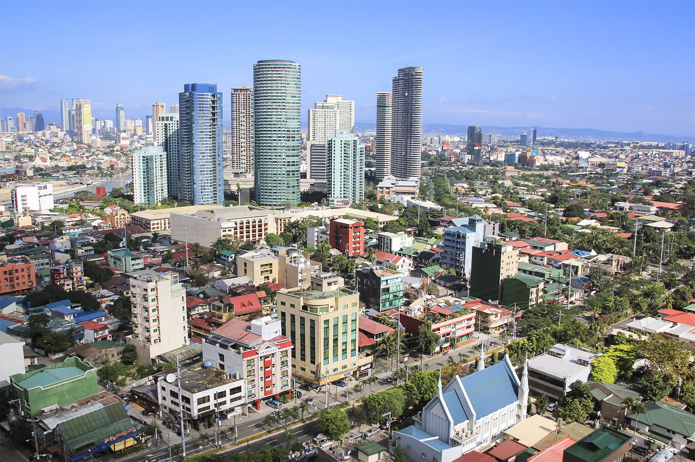
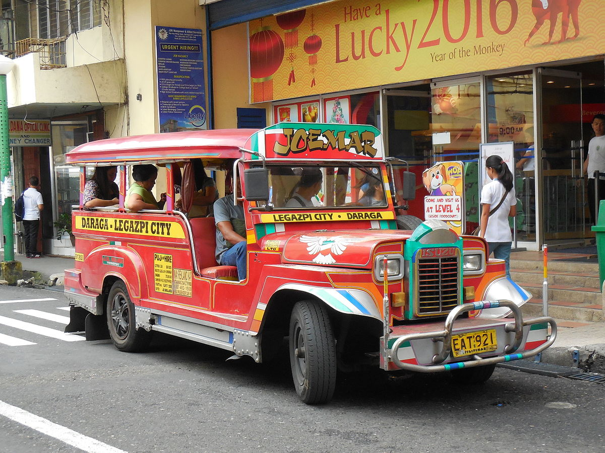
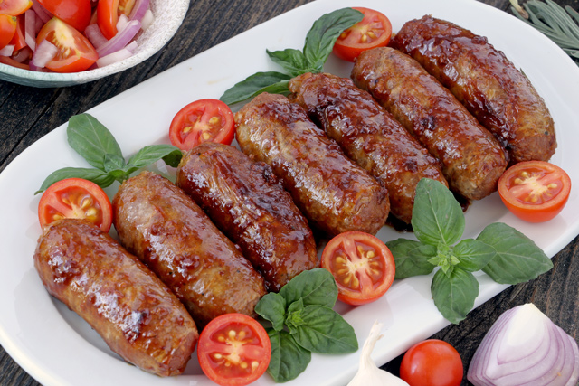

About Manila
Manilla is the capital City of Philippines and is the most desely populated city in the world as of 2019.
It is located on one of the finest sheltered harbours of the Pacific region, about 1,100 km southeast of Hong Kong. The area of Manila, is about 38 square km; National Capital Region around 633 square km. The population of Manila in 2015 was 11,855,975.

Manila is close to the equator, hence, the tropical weather. The wet season normally lasts from June to November and the dry season starts from December to May. The rainiest months are July, August and September. There are normally thunderstorms during those months.
Things to do
So what are the best places to visit in Manila
- Intramuros is home to the oldest churches and administrative buildings in beautiful colonial architecture. Philippines was a Spanish colony for more than 400 years! Famous churches are San Agustin Church and Manila Cathedral. Fort Santiago is the military base for the Spanish government and is located close to the cathedral. While in Intramuros, also visit Casa Manila, a house built in 1980s as a reproduction of mid 19th century houses.
- Chinatown – buildings are run-down but you can find here the best dim sum!
- Shopping malls – Manila is surprisingly home to some of the world’s largest shopping malls. Visit SM North Edsa, SM Megamall, SM Mall of Asia (yes, these have the same owners), Greenbelt, and Glorietta, plus a whole lot more.
- Balut - a chicken or duck egg which is half boiled and then eaten directly from the shell. It is commonly sold as a street food in The Philippines; you can often see it being sold in the streets across the country.
Remember to try riding the jeepney, the country's main mode of public transport.
Food
I never had much memories of the Philippines as I have left at an early age, but when it comes to food, I remember a lot because my mom still cooks them. Almost all dishes are eaten with rice- and my favourites are the marinated meat called tocino (sweetened and cured pork belly) , longanisa (is a Filipino local sausage or chorizo) and tapa (thin slices of beef that are marinated and pan-fried). These are usually served for breakfast with fried egg (but are readily available anytime of the day because of its popularity among locals and foreigners too). Pork barbeque is also popular (marinated pork slices that are skewered and grilled, similar to kebab). When it comes to dessert, leche flan is popular and it is similar to crème brulee.
